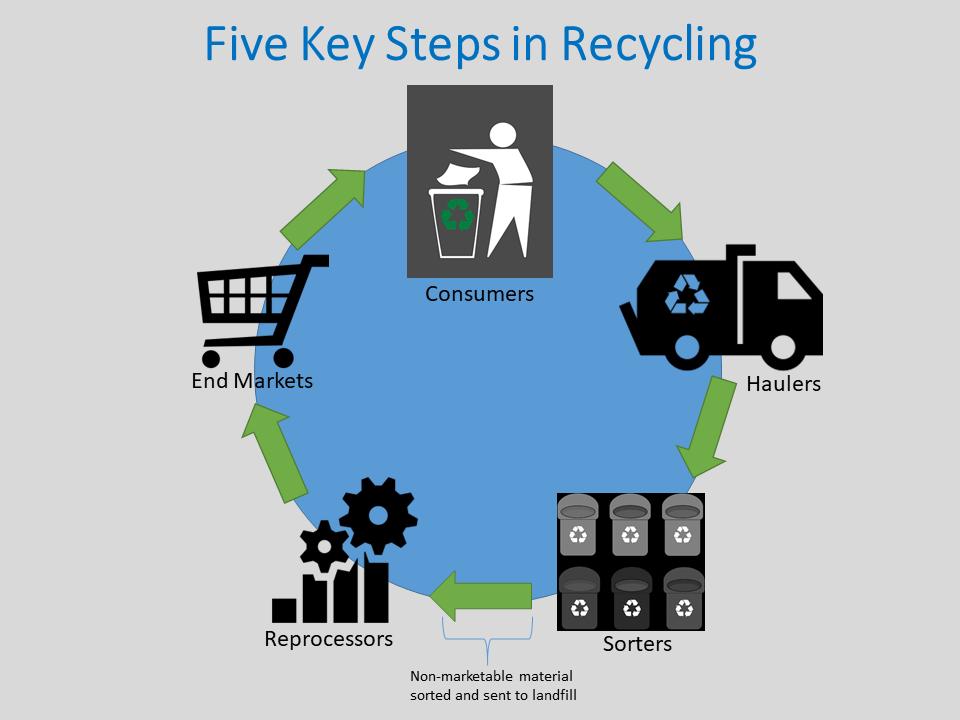

Riciklimi përfshin disa hapa që ndihmojnë në përpunimin e mbetjeve për t’u rikthyer si materiale të përdorshme në forma të reja.

Mbeturinat mblidhen nga kosha të posaçëm ose qendra riciklimi.
Mbetjet mblidhen në mënyrë të organizuar nga shërbimet komunale ose organizata të riciklimit. Ky hap është baza e gjithë procesit, prandaj është e rëndësishme të kemi kosha të ndarë në mënyrë të saktë.
Mbeturinat ndahen sipas tipit të materialit për përpunim.
Në këtë fazë, materialet ndahen në grupe si plastikë, metal, qelq apo letër. Disa ndarje bëhen automatikisht në uzina, të tjera bëhen manualisht nga punëtorë.
Materialet pastrohen nga ndotjet dhe përgatiten për riciklim.
Lavatoret industriale pastrojnë plastikën, qelqin dhe metalet nga ushqimi apo substanca të dëmshme. Kjo i përgatit ato për fazën e prodhimit.
Materialet e përpunuara bëhen produkte të reja.
Pasi përpunohen, materialet kthehen në flake plastike, rrotulla letre apo pllaka qelqi, që më pas përdoren në fabrikat përkatëse për të prodhuar artikuj të rinj.
Ne blejmë dhe përdorim produkte të ricikluara, duke mbyllur ciklin.
Produktet e ricikluara janë pjesë e përditshmërisë sonë: çanta nga plastika e ricikluar, fletore me letër të ripërdorur, mobilje e veshje ekologjike. Duke i blerë këto, mbështesim riciklimin.
Duke ndarë mbeturinat në shtëpi e shkollë, duke ripërdorur sende të vjetra dhe duke zgjedhur produkte të ricikluara, ne kontribuojmë në mjedis më të pastër.